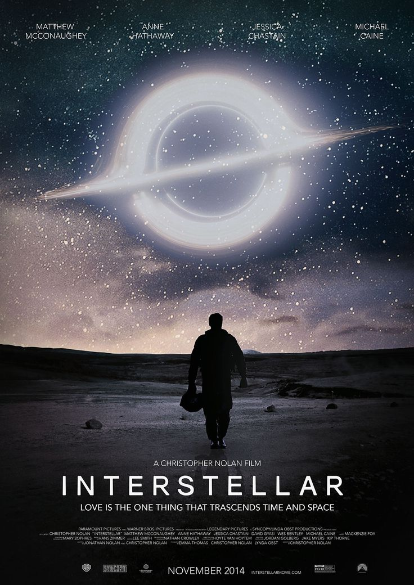

Merhaba, ben Merve Batman. İstanbulda yaşıyorum. 21 yaşındayım. Bilimkurgu izlemeyi ve okumayı severim. Yazılımla uğraşmayı seviyorum.

Yıldızlararası, Christopher Nolan tarafından yönetilen epik bilim kurgu türündeki, 2014 yapımı ABD filmi. Başrollerinde Matthew McConaughey, Anne Hathaway, Jessica Chastain ve Michael Caine yer almaktadır. Filmde bir grup astronotun bir solucan deliğinden geçerek insanların yaşayabileceği yeni bir yer arayışı konu edilmektedir.